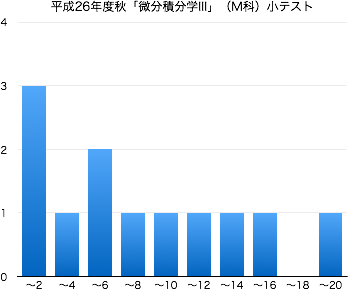

home ›› Teaching ›› NIT ››
2014年度秋学期 微分積分学 III Differential and Integral Calculus III
木2限 10:55-12:35 | 2-273教室 | 対象：機械工学科2年生
担当：佐藤 弘康（hiroyasu [at] nit.ac.jp | W1棟204 | 0480-33-7972）
連絡事項
- 2/x：期末試験の問題と解答を公開しました．
- 1/29：この授業は終了しました．期末試験の得点分布と成績に関する結果を公開しました．
- 1/8：小テストを返却しました．点数が10点満点で採点されています．小テストの配点は「20点」なので，実際の点数はその倍です．
- 12/22：12月18日に実施した小テストの問題と解答を公開しました．
- 12/2：12月18日に小テストを実施します（試験範囲は，第1〜10回の内容まで）．なお，試験中は教科書のみ参照可とします．
- 9/25：ガイダンス資料を公開しました．
- 9/18：このページを公開しました．
- Twitterでこの授業についてツイートしていきます（ハッシュタグは#14fDIC3m）．質問，意見などのリプライを歓迎します．
- 授業に対する基本的な考え方にも目を通しておいてください．
授業の目的
自然科学のみならず工学のさまざまな分野で、現象を表現・解析する手段として微分積分学の知識は欠かせない。 微分積分学の概念・計算技法を身につけるために、2変数関数を対象とした微分法・積分法について学習 する。基礎的な計算技法に習熟するとともに、極値問題や曲面積への応用も理解する。
達成目標
- 2変数関数の極限を求めることができる。
- 偏微分係数の意味を理解し、偏導関数を求めることができる。
- 全微分の意味を理解し、それを求めることができる。
- 合成関数の偏微分公式を理解し、適用することができる。
- 陰関数の微分公式を理解し、適用することができる。
- 2変数関数のテイラーの定理を理解し、テイラー展開を利用した近似式を求めることができる。
- 極値の判定条件を利用して、極値を求めることができる。
- 重積分を求めることができる。
- 重積分の計算技法を用いて、曲面積を求めることができる。
科目の位置づけ
- 微分積分学I／微分法（1変数関数の微分）→ 微分積分学II／積分法（1変数関数の積分）→ 微分積分学III（多変数関数の微積分）
- この科目と「微分積分学I／微分法」、「微分積分学II／積分法」を併せて履修することにより、微分積分学の計算技法を一通り習得することができる。
授業の予定と記録
| 第1回 | 9月 | 25日（木） | ガイダンス，1変数関数と多変数関数 |
| 第2回 | 10月 | 2日（木） | 2変数関数とその極限 第7章 §1.1 |
| 第3回 | 9日（木） | 2変数関数の連続性 第7章 §1.1 偏微分係数の定義 第7章 §1.2 (p.224) |
|
| 16日（木） | 秋期特別研修 | ||
| 第4回 | 23日（木） | 偏微分係数、偏導関数 第7章 §1.2, 1.3 | |
| 第5回 | 30日（木） | 全微分 第7章 §1.4 | |
| 第6回 | 11月 | 6日（木） | 合成関数の偏微分法 第7章 §2.1 |
| 第7回 | 13日（木） | 陰関数の微分法 第7章 §2.2 | |
| 第8回 | 20日（木） | 2変数関数のテイラーの定理 第7章 §3.1 | |
| 第9回 | 27日（木） | 2変数関数の極値 第7章 §3.2 | |
| 第10回 | 12月 | 4日（木） | 2変数関数の極値についての補足（極値の判定条件とヘッセ行列の固有値） 陰関数の極値 第7章 §3.3 |
| 第11回 | 11日（木） | 条件付き極値 第7章 §3.3 累次積分 第8章 §1.1 |
|
| 第12回 | 18日（木） | 2重積分 第8章 §1.1 小テスト（問題と解答） |
|
| 第13回 | 1月 | 8日（水） | 2重積分と体積 第8章 §1.2, 2.1 |
| 第14回 | 15日（木） | 積分変数の変換 |
|
| 29日（木） | 期末試験（問題と解答） (10:40 -- 11:40) |
教科書・参考文献について
- 矢野健太郎・石原繁編 『微分積分』 裳華房 » リンク
評価について
- 期末試験60%，小テスト・演習課題など40%の割合で評価する．
- 毎回の授業で問題演習を実施する．
- 教科書等の問題を指定し，指定の答案用紙に解答して提出してもらいます．．
- 解答後は必ず答え合わせをして，正しくない場合は途中式のどこが間違えているか探して訂正してもらいます（正答をただ書き写すことではない）．
- 授業時間内に終わらない場合は，次回の授業の前々日（ただし土日を除く）の17:00までに私に直接手渡すか，研究室のドアの封筒に提出してもらいます．提出期限が過ぎた答案は一切受け取りません．
- 1回の提出につき2点を加点します（合計点数は最大20点）． ただし，不完全な答案（解答されていない問題がある，答え合わせをしていない，誤答が正されていない，等々の不備）は加点しません．
- 中間期に小テストを実施する（20点）．
- 期末試験（共通試験）を実施する（100点満点）．
- $\min\{20,$(課題提出回数)$\times 2\}+$(中間小テストの点数)$+$(期末試験の点数)$\times 0.6\geqq 60$ で合格とする．
試験の得点分布と評価など
 |
|